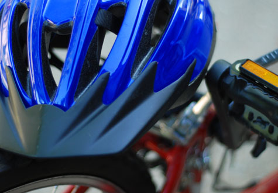

Get the Gear

When riding a bicycle, be sure you have the right materials before hitting the road. Here is a list of gear you may need:
- Properly fitting helmet (For safety)
- Lights (For riding in the dark)
- Reflective pant straps (To become more visible)
- Racks/basket (For carrying items)
- A bike lock (To prevent theft of bicycle)
- Bicycle fenders (For rough terrain)
- Rain jackets/pants
- A change of clothes for work
- Anti-bacterial moist towelettes (To wipe away the sweat)
- Mirrors (To see behind you)